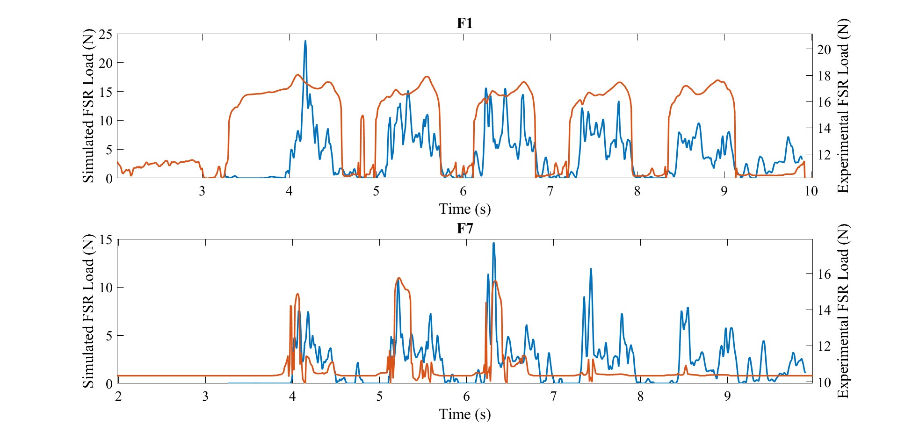
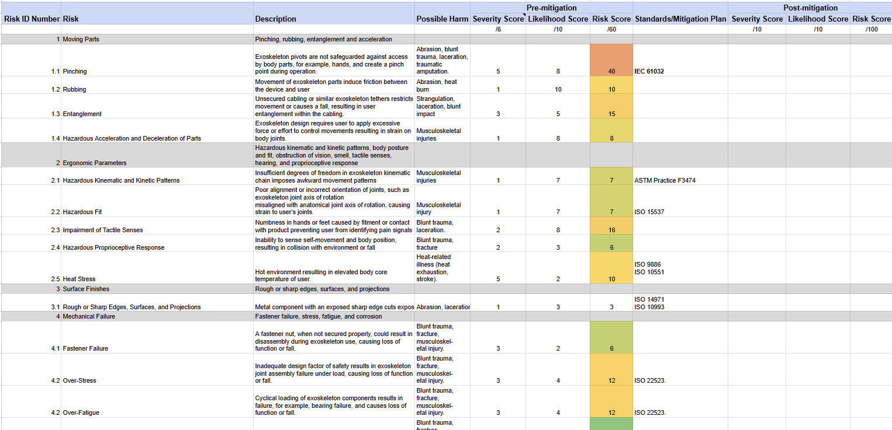

Wearable Exoskeleton for Gait Stabilization
Estimating Human-Exoskeleton Interaction Forces via Instrumented Thigh Brace and OpenSim
Falls are a leading cause of injury among the elderly and persons with gait impairments. This work presents a custom FSR-instrumented thigh brace for measuring physical human-exoskeleton interaction (pHEI) forces, validated through OpenSim biomechanical simulation and human subject testing. Eight Interlink FSR-406 sensors in a 4+4 arrangement capture interaction loads in four directions (flexion, extension, abduction, adduction). A nonlinear calibration model (R² = 0.9972) extends the sensor range to 20 N. Walking experiments on three subjects produce peak interaction loads of 12–16 N in the anterior F1 module, correlated with hip flexion motion. OpenSim elastic foundation contact simulation reproduces the timing of experimental load profiles, with magnitude differences attributed to soft-tissue compliance. Published at IFAC PapersOnLine 2025.
1. Introduction
Problem: Falls are the leading cause of injury-related death among adults over 65 [1]. Gait perturbations — slips, trips, unexpected terrain — account for the majority of fall incidents. A powered hip exoskeleton that detects and resists perturbations within 200 ms could significantly reduce fall risk. But designing such a device requires understanding the interaction forces between the wearer's body and the device — forces that, if poorly characterized, lead to discomfort, skin damage, or control instability.
Prior exoskeleton sensing approaches typically rely on 6-axis load cells mounted rigidly at the cuff — accurate but bulky and uncomfortable for continuous wear. This work investigates whether a compliant, instrumented soft brace can provide sufficient force measurement fidelity while maintaining wearability for realistic gait tasks.
The research was conducted at Rowan University under PI Dr. Mitja Trkov. Fawaz Mallick's contributions include OpenSim simulation development, sensor integration, CAD prototyping, regulatory investigation, and risk mitigation analysis — as well as co-authorship of the published paper.
2. Device Design
Instrumented Thigh Brace
Sensor specifications:
- Sensor type: Interlink FSR-406, 8 modules in 2 rows (4 anterior/lateral top, 4 posterior/medial bottom)
- Active area per sensor: 43.69 mm × 43.69 mm
- Native range: 0.1–10 N; extended range with custom casing: 0–20 N
- Custom PLA casing: Central raised pad (max 0.2 mm deflection) prevents FSR bending and shear; load offsetting ~8.7 N to compensate brace tightening
- Data acquisition: Arduino Uno at 150 Hz; BNO055 IMU at 100 Hz for joint angles
- Subjects: 3 healthy males; thigh diameters 143.3–199.1 mm
Calibration
A universal testing machine (Shimadzu AGS-X) loaded each FSR at 0.01 mm/min displacement. A nonlinear exponential model fits the voltage-to-force relationship:
R² = 0.9972 · V = FSR voltage output · F = applied load in Newtons

Static Loading Tests
Three subjects performed isolated hip movements (flexion, extension, abduction, adduction) against a fixed load cell reference (FUTEK S-load cell). Mutual Information analysis identified which FSR module had the strongest correlation with each loading direction:
| Loading Direction | Primary FSR Module | Physical Location |
|---|---|---|
| Hip flexion | F1 | Top anterior |
| Hip adduction | F2 | Top lateral |
| Hip extension | F5 | Bottom posterior |
| Hip abduction | F6 | Bottom medial |
3. OpenSim Biomechanical Simulation
To validate the brace design and contact force model before extensive human testing, the experimental setup was replicated in OpenSim using an elastic foundation contact model — computationally efficient and well-suited to compliant contact surfaces.
Simulation architecture:
- Human musculoskeletal model + imported exoskeleton geometry
- Thigh representation: two spherical meshes (top and bottom strap contact regions)
- FSR representation: eight flat meshes on the exoskeleton link
- Contact stiffness: 60,000 N/m (heuristically tuned)
- Contact damping: 3,000 N·s/m
- Kinematics input: BNO055 IMU quaternion → inverse kinematics → hip joint angles → forward dynamics

.png)
4. Risk Analysis & Design Controls
As a device intended for human wear, a structured risk analysis was conducted across mechanical, electrical, and user-interface failure domains. Design controls were implemented to reduce residual risk to acceptable levels.

5. Results
Summary of findings:
- F1 module (anterior) shows the strongest and most consistent hip flexion correlation across subjects
- Mutual Information analysis confirms sensor placement strategy — each direction has a dominant FSR
- OpenSim simulation reproduces the timing of experimental load profiles; magnitude matching is partial due to soft-tissue compliance not modeled by elastic contact
- Compliant brace distributes loads across multiple sensors — beneficial for subject comfort, but introduces load-sharing that complicates single-sensor attribution
- Inter-subject variability is significant (thigh 143–199 mm) — future work should include subject-specific contact model tuning
6. Publication
The paper presents the full sensor characterization, calibration methodology, human-in-the-loop static loading tests, treadmill walking experiments, and OpenSim simulation validation. Key contributions include the custom FSR casing design (novel load-offsetting mechanism), the nonlinear calibration model with R² = 0.9972, and the Mutual Information sensor attribution framework.
References
- Centers for Disease Control and Prevention (2023). Falls and Fall-Related Injuries Among Adults Aged ≥65 Years. MMWR Morb Mortal Wkly Rep.
- Varma, V., Roberts, Z., Mallick, F., & Trkov, M. (2025). Estimating Human-Exoskeleton Interaction Forces Using an Instrumented Thigh Brace and OpenSim. IFAC PapersOnLine, 59-30, 353–358. DOI: 10.1016/j.ifacol.2025.12.262
- Delp, S. L., Anderson, F. C., Arnold, A. S., Loan, P., Habib, A., John, C. T., ... & Thelen, D. G. (2007). OpenSim: open-source software to create and analyze dynamic simulations of movement. IEEE Transactions on Biomedical Engineering, 54(11), 1940–1950.
- Interlink Electronics (2010). FSR 406 Data Sheet. Interlink Electronics, Inc.